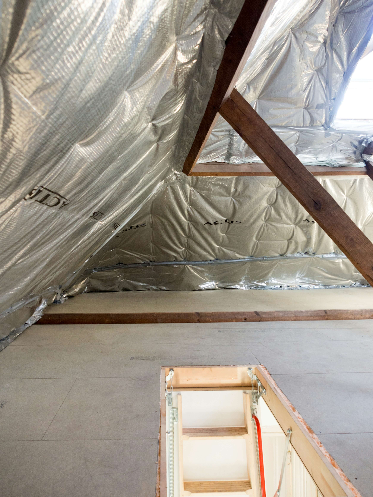
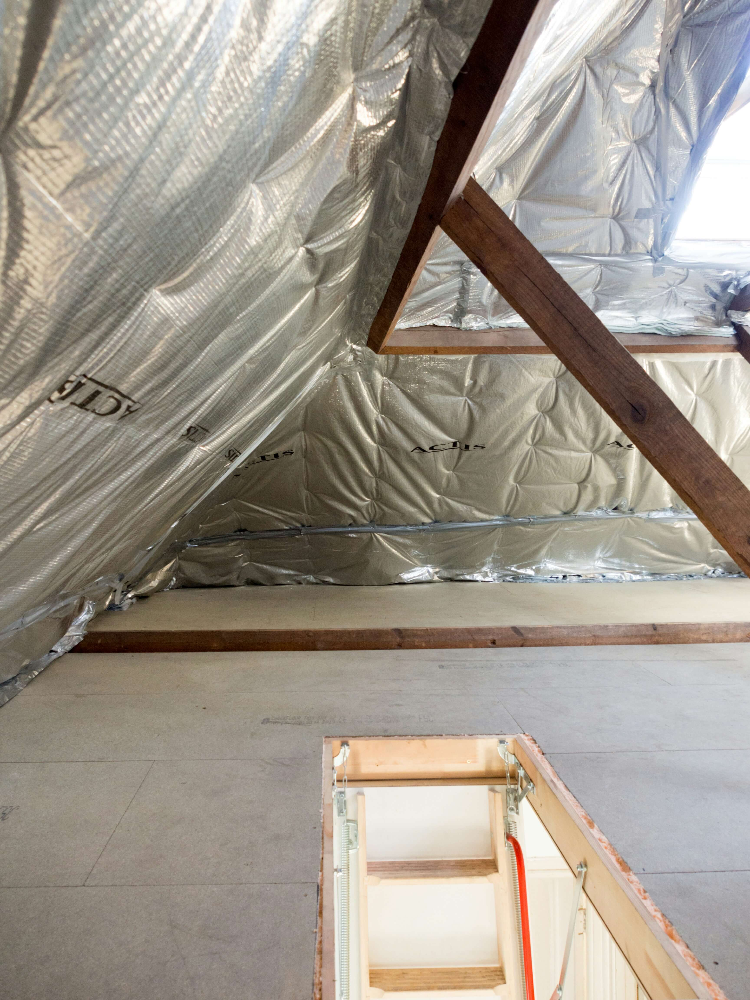

Barking & Dagenham Loft Insulation Specialists
Warm Your Home • Cut Energy Bills • Experienced Local Installers
Loft, Roof & Attic Insulation Done Properly
Fast, Local, Same-Day Quotes
CALL NOW FOR A FREE INSULATION QUOTE EMAIL FOR SAME-DAY QUOTE
Warm Your Home • Cut Energy Bills • Experienced Local Installers
Loft, Roof & Attic Insulation Done Properly
Fast, Local, Same-Day Quotes
CALL NOW FOR A FREE INSULATION QUOTE EMAIL FOR SAME-DAY QUOTE
Barking loft insulation, we install and fit affordable, top quality, long lasting loft insulation in barking
Our local team can install insulation in your loft that will reduce heat loss, cut energy bills & keep your home warmer all year round.
The team works with all property types across Barking, Dagenham, Rush Green, Becontree and surrounding areas, although each area varies we've found the know-how to complete any loft type insulation job at a very high standard leaving barking homeowners happy.
Whether you need new insulation, a top-up, or full removal and replacement, we deliver fast, professional, long-lasting loft insulation installs.
you can see the benefits of having loft insulation installed here Benefits of quality loft insulation
Alot of homes across Barking were built way before modern insulation standards, so that means a large amount of heat can still escape through the loft as loft insulation today is much thicker & durable. If your upstairs rooms feel colder than they should or heating takes longer to reach the temperature you're aiming for then having loft insulation installed in your Barking property can genuinely make a noticeable difference. This service focuses on Loft/attic insulation installation only our methods have been honed and specialised to suit the property styles throughout the area.
Terraced houses, semis and bungalows across Barking, often contain out dated insulation that is thin or uneven that's simply no longer effective. Bringing loft insulation up to the recommended depth will help reduce heat loss, improve overall comfort and lower ongoing heating costs, without major disruption to the home.
With loft insulation in Barking, property layouts, access points and ventilation requirements vary and these factors matter because it changes how the team have to navigate to properly install your loft insulation, if you try to avoid these details common mistakes can occur so it's important understanding these factors to make sure your loft insulation performs properly, not only today but long term Whether you need a simple top-up or existing material needs replacing, we carry at work properly and to a high standard for the best results.
SPEAK TO A LOCAL BARKING INSULATION SPECIALISTUpgrading to proper 270mm insulation can cut heat loss by up to 25%, so that saves most Barking & Dagenham homeowners £300–£500 per year on heating. A warmer home, lower bills — and the insulation usually pays for itself within a few winters.
CALL NOW FOR A FREE LOFT INSULATION QUOTE
High-Quality Insulation Materials

Trusted, Experienced Local Installers

Save £300–£500 Per Year on Energy Bills
All Barking loft insulation needs — installed properly by local specialists.
If you want to understand the benefits of having Loft Insulation fitted in Barking, or what it does for your property and rough costs, then these simple guides explain everything clearly.


 


Most jobs take 2–4 hours. Full loft upgrades usually take one day. Boarding may take up to 3 days.
Having loft insulation installed in Barking & Dagenham homeowners typically save £300–£500 per year on heating bills.
Yes — All old, damp, damaged or ineffective material will be removed.
Yes — All Barking & Dagenham loft types are covered whether that's terraced, semi-detached, detached, bungalows and modern builds.